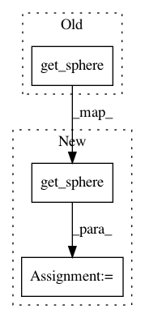

f9f298f603a38c703d9b5f48e1809818053c5dfc,pynets/dmri/estimation.py,,sfm_mod_est,#Any#Any#Any#,196
Before Change
print("Fitting SF model...")
B0_mask_data = np.asarray(nib.load(B0_mask).dataobj).astype("bool")
print("Reconstructing...")
model = sfm.SparseFascicleModel(gtab, sphere=get_sphere("repulsion724"), l1_ratio=0.5, alpha=0.001)
sf_mod = model.fit(data, mask=B0_mask_data)
del B0_mask_data
After Change
from dipy.data import get_sphere
import dipy.reconst.sfm as sfm
sphere = get_sphere("repulsion724")
print("Fitting SF model...")
B0_mask_data = np.asarray(nib.load(B0_mask).dataobj).astype("bool")
print("Reconstructing...")
model = sfm.SparseFascicleModel(gtab, sphere=sphere, l1_ratio=0.5, alpha=0.001)
sf_mod = model.fit(data, mask=B0_mask_data)
sf_odf = sf_mod.odf(sphere)
del B0_mask_data
return sf_odf, model
In pattern: SUPERPATTERN
Frequency: 3
Non-data size: 3
Instances
Project Name: dPys/PyNets
Commit Name: f9f298f603a38c703d9b5f48e1809818053c5dfc
Time: 2020-04-29
Author: dpisner@utexas.edu
File Name: pynets/dmri/estimation.py
Class Name:
Method Name: sfm_mod_est
Project Name: nipy/dipy
Commit Name: cf98e07258141202387f84d4578b4232700caa21
Time: 2011-02-09
Author: matthew.brett@gmail.com
File Name: dipy/reconst/dti.py
Class Name:
Method Name: quantize_evecs
Project Name: nipy/dipy
Commit Name: cf98e07258141202387f84d4578b4232700caa21
Time: 2011-02-09
Author: matthew.brett@gmail.com
File Name: dipy/tracking/propagation.py
Class Name: EuDX
Method Name: __init__